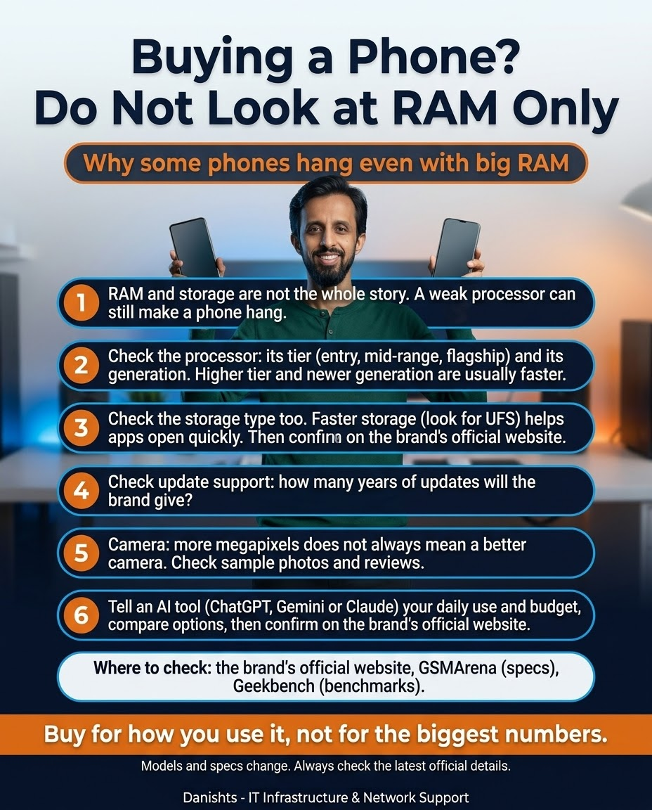
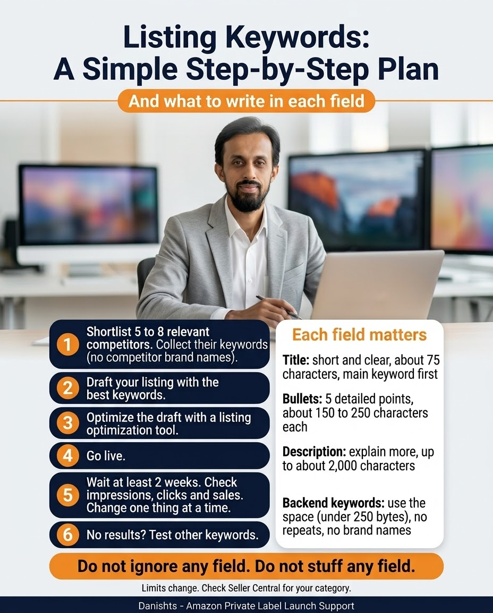
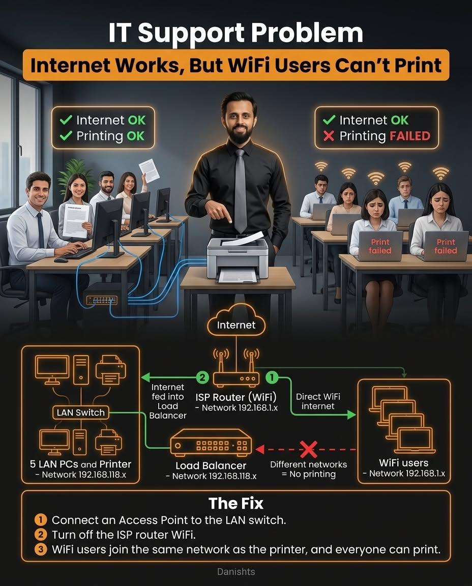

6 Questions to Ask Your IT Person Every Month
You do not need to be technical. You need a monthly report.
Read more →
Break-Even ACoS: How Much Can You Spend on Amazon Ads?
Know your limit before you launch.
Read more →
Buying a Phone? Do Not Look at RAM Only: 6 Things to Check
Why some phones hang even with big RAM.
Read more →
Use AI to Pick the Right Phone: Not Every 8 GB RAM Phone Is Fast
Not every 8 GB RAM phone is fast.
Read more →
IT Documentation for a Small Office: 3 Sheets to Keep
Small or big office, write down what matters.
Read more →
What to Sell on Amazon: Pick Your First Product by Budget
Every product with demand has competition. Start with your budget.
Read more →How to Choose an Amazon Supplier: Alibaba Checklist Before You Pay
Where to look and how to check a supplier.
Read more →
Amazon Listing Keywords: A Simple Step-by-Step Plan
And what to write in each field.
Read more →
Amazon PPC Strategy for a New Product: Manual vs Automatic
Start simple, learn fast, keep what works.
Read more →
Amazon FBA Fee Changes 2027 (US): Key Dates and What to Do
Key dates and 3 steps for US store sellers.
Read more →
AI Is Changing Jobs: 5 Things to Do Starting Today
Take it seriously. Start today.
Read more →
How to Learn AI From Zero: A 6-Step Path for Beginners
No coding needed. Basic computer knowledge is enough.
Read more →
AI Automation for Your Business: WhatsApp and Email Basics
Let AI handle the repeat work in your business.
Read more →
Office Internet Slow? 5 Rules to Manage It, Not Just Buy More Speed
5 simple rules for a stable office network.
Read more →
Small Office? Protect Your PCs and Your Data
4 simple steps for PC security and backup.
Read more →
ACoS vs TACoS: What's the Difference?
Two numbers, two different questions, with a simple example.
Read more →
Is Your CCTV Safe from Hackers?
IP camera risks and 6 simple fixes.
Read more →
CCTV: DVR vs NVR vs IP Camera
Which system fits your office, and the right setup by office size.
Read more →
Amazon PPC: The Cost That Feels Blind
Auto vs manual campaigns, and why to plan the budget first.
Read more →
Business Email: Google Workspace vs Microsoft 365 vs cPanel
cPanel, Google Workspace or Microsoft 365: pros, cons and 4 setup rules.
Read more →
How to Prepare Your Amazon Listing Images
Main image rules, 5 image types and a 6-step checklist.
Read more →
Why Some Amazon Products Fail in Research
Which stage can stop a product, and the final check before you pay.
Read more →
Slow PC? Not Always the Internet
A simple 6-step PC care checklist to do twice a month.
Read more →
What Makes an Office Network Secure? 6 IT Rules
PC audit, bandwidth, VLAN, access points, backup and AD domain.
Read more →
Internet Works, But WiFi Users Can't Print
Why it happens when two networks exist, and the simple fix.
Read more →
LAN vs WiFi in the Office: What Should Stay Wired?
Which devices belong on LAN, which on WiFi, and why.
Read more →
What Makes an Amazon Product Final? 7 Steps
From product research to PPC and launch.
Read more →
Amazon Supplier Negotiation: Talk to 5 to 8 Suppliers
How to compare suppliers and get terms in writing.
Read more →
Amazon PPC: Why Every New Launch Needs a Plan
Budget, bid and ACoS explained with a simple example.
Read more →